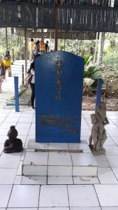
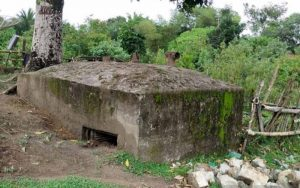
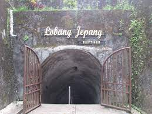
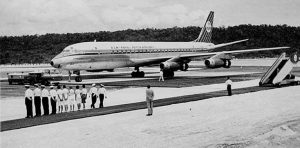
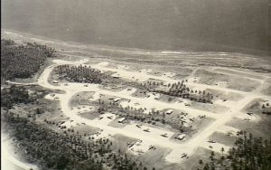
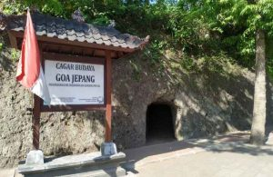
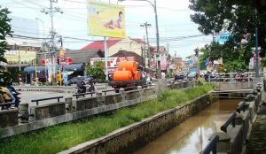

Jepang menjadi salah satu Negara yang pernah menjajah Indonesia. Meskipun hanya menjajah hanya sekitar 3,5 tahun saja, namun peninggalan Jepang di Indonesia meninggalkan luka yang tidak akan terlupakan. Beberapa kekejaman yang pernah dilakukan antara lain menyiksa, kerja paksa hingga membunuh. Lewat cara itulah Jepang memperlakukan orang-orang Indonesia pada waktu penjajahan. Misalnya saja peninggalan dalam bentuk gua di Indonesia. Dalam sejarah Perang Dunia II, Balikpapan menjadi kota penemuan minyak sebagai komoditas utamanya. Sekitar tahun 1942, Balikpapan menjadi kota yang disinggahi Jepang setelah kota Tarakan. Adanya hal tersebut tentu membuat beberapa titik di Balikpapan tentu terdapat bangunan peninggalan Jepang di Indonesia. Beberapa situs bersejarah tersebut dilindungi oleh UU RI No 11 Tahun 2010 tentang Cagar Budaya dan berada dibawah pengawasan Dinas Pemuda Olahraga, Kebudayaan dan Pariwisata Kota Balikpapan.
Bangunan Peninggalan Jepang di Indonesia
Tugu Perdamaian
Bunker di Barak Prajurit Batalyon Infanteri
Gua Jepang di Bukittinggi
Bandara Frans Kaisiepo
Bandara Leo Wattimena
Gua Klungkung
Selokan Mataram
A. Tugu Perdamaian dan Makna Simbolis
Untuk bisa ke tempat ini Anda bisa mengunjunginya di jalan Soekarno Hatta Km 13, Balikpapan. Untuk menuju ke tempat tersebut terdapat tangga-tangga kecil, namun Anda tetap harus berhati-hati karena terdapat banyak lumut yang membuat jalanan menjadi licin. Dibangunnya tugu perdamaian dan makam simbolis ini untuk mengenang gugurnya pasukan Jepang, Australia, dan Indonesia dalam periode Perang Dunia II. Di tugu perdamaian tersebut, terdapat tulisan kanji yang ditulis oleh Bapak Towa Kai pada 15 Agustus 1990 dan keterangannya yang berbunyi «Monumen Perdamaian dan Persahabatan Untuk Mengenang Orang Jepang, Indonesia, Australia Yang Gugur di Daerah Balikpapan Tersebut Semasa Perang Dunia Ke II.
B. Meriam Jepang
Meriam Jepang yang jumlahnya ada dua ini berada di Kampung Baru Ilir, Sidodadi Balikpapan. Peninggalan pada masa penjajahan Jepang di Indonesia yang mempunyai nama lain Gunung Meriam ini berlokasi di bukit. kedua meriam tersebut merupakan meriam yang dimiliki oleh Angkatan Laut Jepang yang bernama Kaigun. Pada saat itu tengah berupaya untuk merebut sumur minyak yang berada di Balikpapan. Dan kedua meriam inilah yang menjadi saksi bisu mengenai perebutan kalang minyak yang terdapat di Balikpapan antara Jepang melawan Australia yang menyebabkan ratusan tentara Australia tewas.
C. Bunker Jepang
Peninggalan Jepang di Indonesia berupa bunker in berada di Barak Prajurit Batalyon Infanteri atau Yonif 600/Raider. Ketika periode Perang Dunia II silam bunker tersebut sangat bermanfaat sebagai tempat pertahanan untuk pasukan Jepang. Untuk bunker pertama bentuknya cukup besar dan suasananya di dalamnya terlihat sedikit berantakan mengingat bunker tersebut sudah lama tidak digunakan sepertinya para warga dan masyarakat setempat tidak mengurusnya.
D. Gua Klungkung
Meninggalkan Pulau Kalimantan, ternyata terdapat goa peninggalan Jepang di Indonesia yang letaknya di Bali atau lebih tepatnya berada di Kabupaten Klungkung. Saat pasukan Jepang memasuki wilayah Bali, dibuatlah Gua Klungkung tersebut yang berguna untuk tempat perlindungan para pasukan tentara Jepang dalam upaya mempertahankan diri dari serangan musuh dan pejuang nasionalis Indonesia. Mempunyai 16 lubang cabang dengan tingkat kedalaman sekitar 14 meter dan 2 lubang cabang lagi namun tidak berhubungan satu sama lain. Konon, ada banyak tentara yang tewas di tempat tersebut di antaranya yaitu para warga sipil, para tahanan perang, dan prajurit yang didakwa tidak becus dalam menjalankan tugasnya juga akan dieksekusi mati.
E. Gua Jepang Bukittinggi
Lokasi peninggalan Jepang di Indonesia yang satu ini berada di dalam Taman Panorama yang masih berada di wilayah Guguk Panjang, Kota Bukittinggi. Selain terdapat ruang penyiksaan yang dulunya digunakan untuk menginterogasi musuh, ada pula ruang penjara yang dijadikan kuburan masal. Ada pula sebuah ruangan yang dinilai paling mengerikan yaitu bernama Dapur. Dulunya para buruh romusha yang keadaannya sakit-sakitan atau sekarat akan dikirim ke Dapur untuk selanjutnya dimutilasi. Mayat maupun potongan tubuh mereka yang dimutilasi tersebut dibuang melalui salah satu lubang yang terhubng ke sebuah sungai di Bukittinggi, Ngarai Sianok.